T2's square ticket, tear height and big sun, drawn with round 1's light outline round the sun and its full, continuous tear. Round 1 B and T2 as it is now are alongside for comparison.
Each version is shown with ‘Altaria AI’ and with the lowercase ‘altaria’ wordmark on light and dark, at a true 16 px, and in one colour and reversed.
Round 3, round 2 and round 1 are unchanged.
“can I see it with a similar outline to the original concept with the outline of the sun and the full tear”
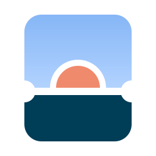
Round 1 B
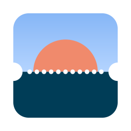
T2 as it is nowT2·A Outlined, full tear
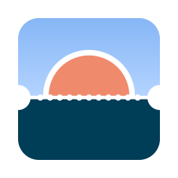
T2·B Outlined, beaded tearR1
Round 1 B
reference
Shape
0.85:1 portrait
Sky / stub
61 / 39
Sun
radius 36, 10-unit ring
Tear
continuous 12-unit cut
What it is
The original Horizon Ticket, with the sun recoloured to Dawn coral so only the drawing differs.
The sun sits inside a light ring, and a continuous light cut runs notch to notch.
With ‘Altaria AI’
With the ‘altaria’ wordmark
16 px check
colourone colourreversed
One colour and reversed, 64 and 32 px
The outline and the full tear you asked for, on the older, taller ticket with a small sun.
T2
Square Ticket
as it is now
Shape
1:1 square
Sky / stub
56 / 44
Sun
radius 63, no ring
Tear
11 punched holes
What it is
Round 3's T2, unchanged: the square ticket with the tear at 56% and a big sun.
The tear is a row of punched holes, and the sun has no ring.
With ‘Altaria AI’
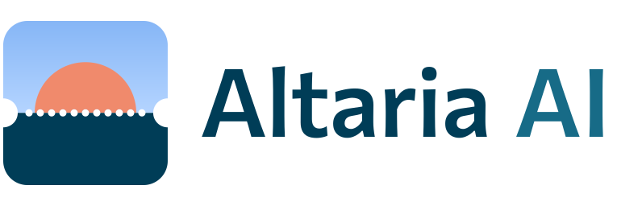
With the ‘altaria’ wordmark
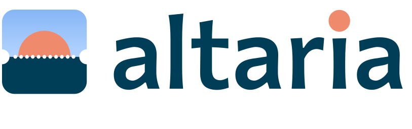
16 px check
colourone colourreversed
One colour and reversed, 64 and 32 px
Balanced and square. The holes fade out below about 32 px.
T2·A
Outlined, Full Tear
new: literal
Shape
1:1 square
Sky / stub
56 / 44
Sun
radius 56, 10-unit ring
Tear
continuous 12-unit cut
What changed
T2's square ticket, softer corner and tear height, drawn in round 1's style.
The punched holes become round 1's continuous light cut, 12 units, notch to notch.
The sun gets round 1's 10-unit light ring. The coral disc is radius 56, so with its ring it spans slightly more than T2's sun.
In one colour, as in round 1, the whole dome is cut out: a white arch on a white line.
With ‘Altaria AI’
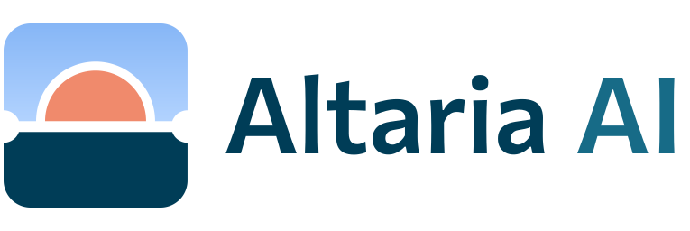
With the ‘altaria’ wordmark
16 px check
colourone colour
reversed
One colour and reversed, 64 and 32 px
The version asked for. The ring and the cut read as one light line that runs across and arches over the sun, and a continuous cut survives small sizes better than holes.
T2·B
Outlined, Beaded Tear
new: alternative
Shape
1:1 square
Sky / stub
56 / 44
Sun
radius 58, 8-unit ring
Tear
5-unit cut threaded with 11 holes
What changed
The same outlined sun, with the tear drawn as a thin continuous cut threaded with T2's punched holes.
It keeps the full line of round 1 and the perforation of round 2 in one.
The ring is a little finer (8 units) to match the thinner cut.
With ‘Altaria AI’
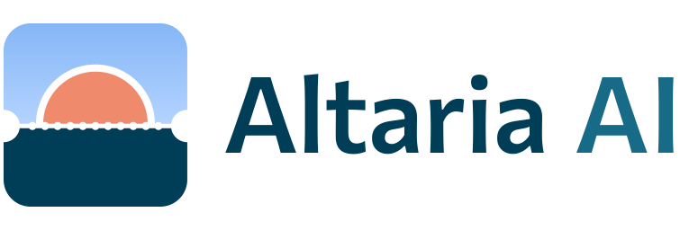
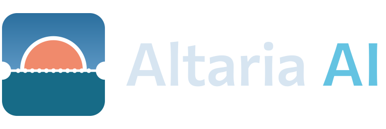
With the ‘altaria’ wordmark
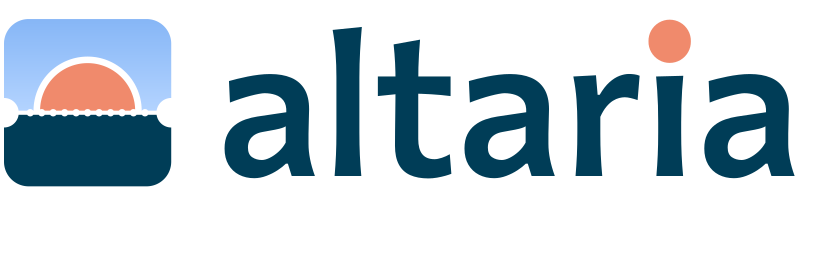
16 px check
colour
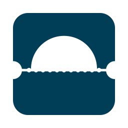
one colour
reversed
One colour and reversed, 64 and 32 px
For keeping a hint of perforation. It's busier up close, and at small sizes it reads like A.
Lead: T2·A, Outlined, Full Tear
It is exactly what the note asks for: round 1's outline and tear on T2's balanced square. The ring and the cut join into one light line, and a continuous cut holds up at 16 to 32 px where punched holes fade.
One trade-off to know
A continuous cut reads more as a horizon than as a tear, so the side notches carry the ‘ticket’ reading on their own. If you miss the perforation, T2·B keeps it as a detail.
Kept from T2
The 204 × 204 square with its softer corner, the tear at 56%, Dawn coral and the sky gradient. In dark mode the stub stays teal #176B87, and the ring and cut show the night page, as in round 1.